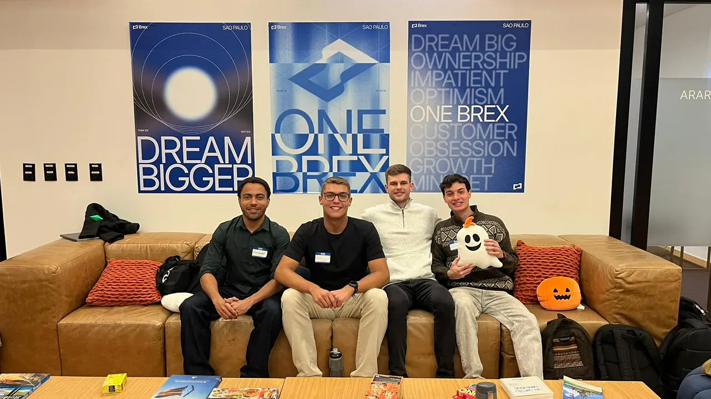
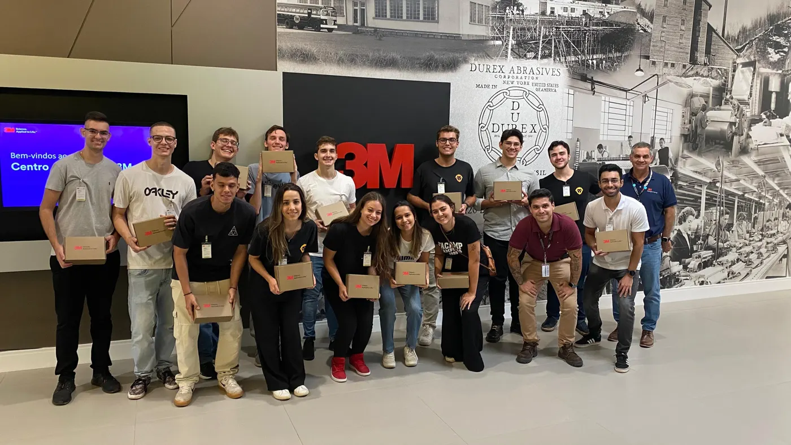
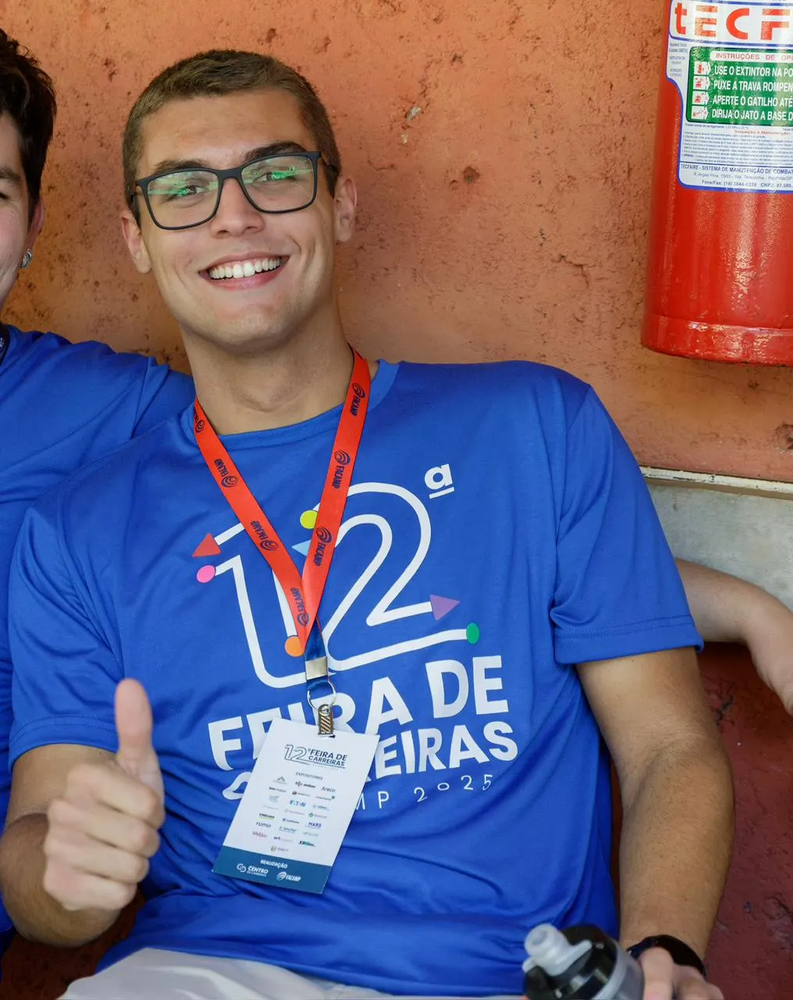
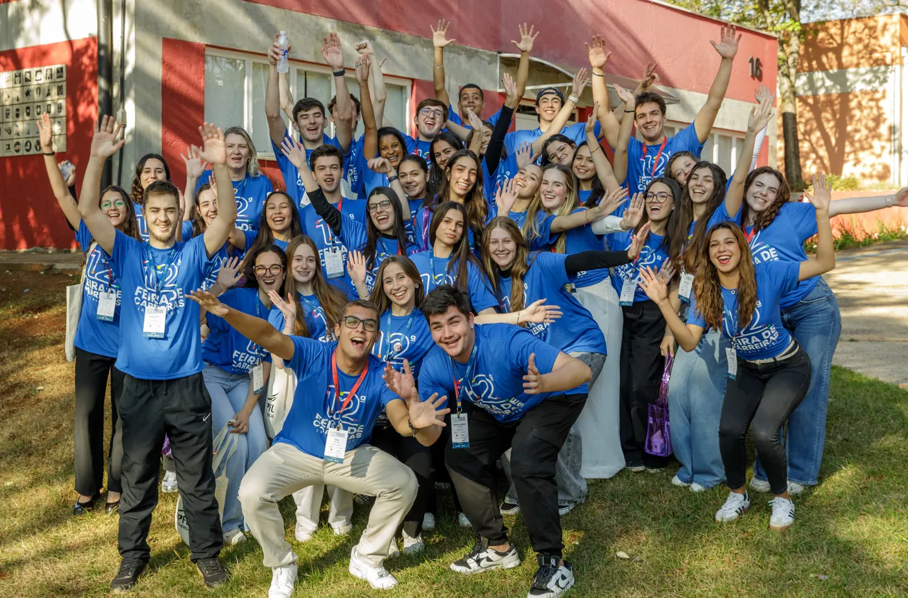
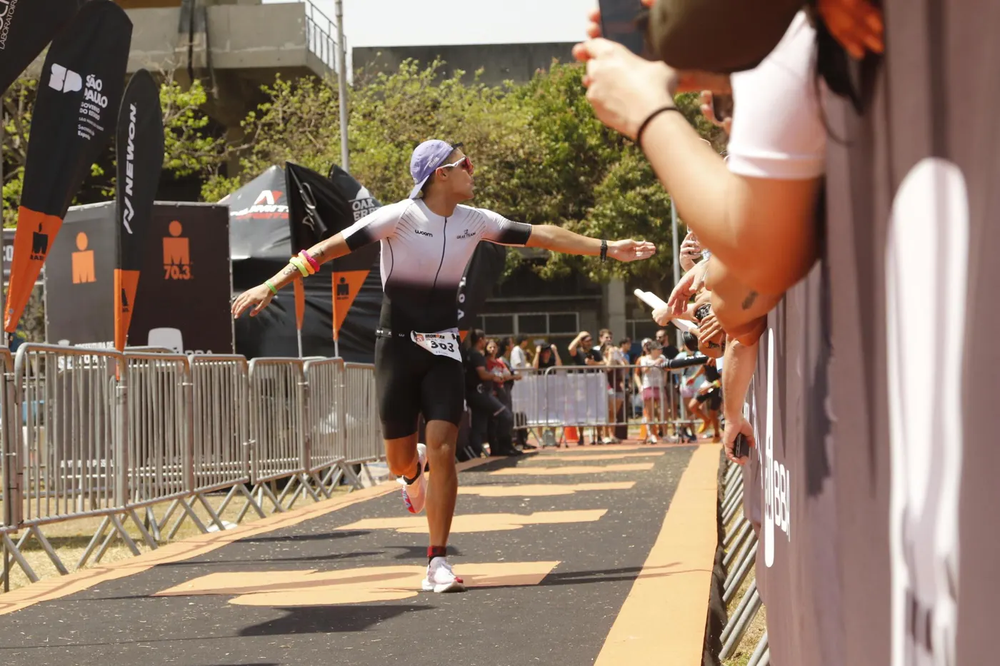

FACAMP
Entrada em Engenharia da Computação. O começo de tudo.
GraduaçãoDeveloper, engineer, project leader. Full-stack em produção na Motorola, engenharia da computação pela FACAMP, a partir de Americana, SP.
Disponível para projetos · --:-- BRT





Vendedor de IA e programa de fidelidade dentro do WhatsApp para pequenos lojistas. O saldo de pontos é um livro-razão imutável, feito para 60 mil clientes.
Abrir cerchia.com.br →Site institucional do Diretório Central dos Estudantes da FACAMP: a vitrine dos eventos, das visitas técnicas e da Feira de Carreiras para mais de 1.000 pessoas.
Ver o site →Detecção de defeitos em peças injetadas para a Amanco Wavin, via CITEC FACAMP. YOLOv8 com mAP@0.5 de 88,6% e F1 de 0,88 em amostras reais de produção.
Ver na carreira →Tigela registra quem alimentou cada pet e avisa a casa inteira; Cadê o Carro controla a frota encostando o celular na tag NFC. React, FastAPI e PostgreSQL, em uso todo dia.
Abrir a Tigela →Um "Wellhub para estudantes": check-in em academias parceiras, painel da academia e backoffice de operação. Flutter, FastAPI e PostgreSQL.
Testar o app →Também faço sites e sistemas para outras pessoas e negócios. Este espaço está esperando o próximo projeto.
Vamos conversar →Entrada em Engenharia da Computação. O começo de tudo.
GraduaçãoEntrada no Diretório Central dos Estudantes: visitas técnicas à XP, Ambev, Agibank e Karcher.
Membro · desde mar/2023Primeira edição na comissão dos Jogos Universitários, na organização das provas e da integração entre instituições.
Membro da comissãoVice-presidência: 1º Fórum das Engenharias com a 3M e Feira de Carreiras para mais de 1.000 pessoas.
Vice-presidente · até ago/2025Organização geral dos Jogos Universitários: estatutos, regulamentos, segurança e integração entre instituições.
Presidente da comissãoVisão computacional com YOLOv8 para defeitos em peças injetadas: mAP@0.5 de 88,6% e F1 de 0,88.
PesquisadorMapeamento de processos com BPMN e MFV para reduzir lead time e setup.
Parceria acadêmicaPalestra sobre IA + ERP para operações inbound no maior congresso de logística do Brasil.
PalestranteConsolidação de custos na plataforma global de PLCM: 200+ produtos e 400 planilhas viraram um sistema só. Em produção desde ago/2026.
R&D · Angular, Java, BigQueryEntrei na FACAMP em 2022 e, ao longo do curso, liderei iniciativas que conectaram alunos, empresas e profissionais. Essa passagem pela gestão me deu o que uso todo dia como desenvolvedor: entender o problema antes de escrever a solução.
Em 2025 entrei em visão computacional para a indústria, o que me levou ao full-stack na Motorola. Fora disso, triatleta amador: Ironman 70.3 em 2024.